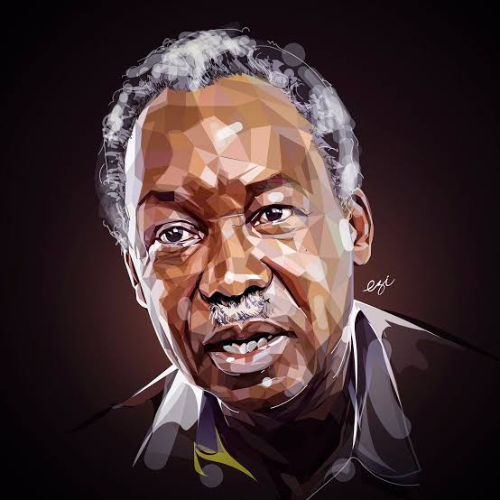
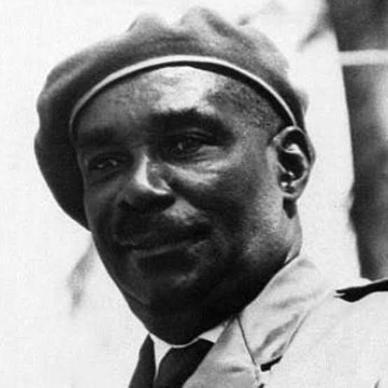
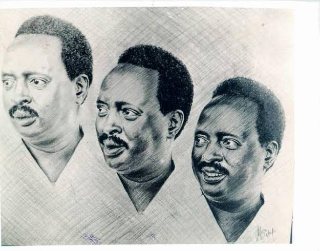

Tanzania Patriotic leaders
Julius Kambarage Nyerere

Julius Kambarage Nyerere, widely known as Mwalimu Nyerere, was a Tanzanian anti-colonial activist, politician, and statesman. Born on October 13, 1922, in Butiama, Tanganyika (present-day Tanzania), Nyerere played a significant role in leading his country to independence and shaping its political landscape.
Nyerere's political journey began during his time as a student, where he became involved in various political and social movements. In the early 1950s, he founded the Tanganyika African National Union (TANU), which aimed to unite the country's diverse population and fight for independence from British colonial rule.
Under Nyerere's leadership, TANU grew into a powerful political force, advocating for self-governance, social justice, and equality. Through peaceful means, Nyerere led Tanganyika to independence in 1961, becoming its first Prime Minister and subsequently its first President in 1962 after the country became a republic.
Nyerere's vision for Tanzania was deeply rooted in African socialism and self-reliance. He introduced the concept of Ujamaa, a policy aimed at achieving economic and social development through communal living and cooperative agricultural production. Nyerere believed in the importance of rural development, education, and healthcare for all Tanzanians.
As President, Nyerere pursued an agenda focused on national unity, eradicating poverty, and promoting Pan-Africanism. He actively supported liberation movements in other African countries, providing assistance and refuge to those fighting against colonialism and apartheid.
Nyerere's leadership style was characterized by his humility, integrity, and commitment to serving the people of Tanzania. He emphasized the importance of ethical leadership and the need for leaders to lead by example. Nyerere stepped down as President in 1985 but remained an influential figure in Tanzanian and African politics.
Beyond his political career, Nyerere was a renowned intellectual and philosopher. He authored several books and speeches, discussing topics such as African socialism, education, and global politics. Nyerere's ideas and philosophies continue to inspire scholars, activists, and leaders worldwide.
Julius Nyerere's contributions to Tanzania and the African continent are immeasurable. His leadership, principles, and dedication to the welfare of his people have earned him immense respect and admiration. Nyerere's legacy as a visionary leader, advocate for social justice, and champion of African unity and independence will forever be remembered in the history of Tanzania and the broader African liberation movement.
Abeid Amani Karume

Abeid Amani Karume was a prominent Tanzanian politician and nationalist leader who played a pivotal role in the struggle for independence and the subsequent development of Zanzibar. Born on August 4, 1905, in Zanzibar City, Abeid Karume became a key figure in shaping the destiny of the archipelago.
Karume's political journey began during the era of British colonial rule in Zanzibar. He joined various organizations that aimed to advocate for the rights and welfare of the local population, particularly the majority African community. Karume became a member of the Zanzibar African Association (ZAA), which later transformed into the Afro-Shirazi Party (ASP).
As a leader of the ASP, Karume worked tirelessly to fight for the rights and liberation of the people of Zanzibar. He played a critical role in negotiating the merger between Zanzibar and Tanganyika, leading to the formation of the United Republic of Tanzania in 1964. Karume served as the first President of Zanzibar from 1964 until his untimely death in 1972.
During his presidency, Karume prioritized the development of Zanzibar and the improvement of the living conditions of its people. He introduced policies to promote education, healthcare, and infrastructure development. Karume also focused on fostering unity among the diverse ethnic and religious groups in Zanzibar, promoting a sense of national identity and shared purpose.
Under Karume's leadership, Zanzibar made significant strides in various sectors, including agriculture, tourism, and social welfare. He initiated land reforms to address historical inequalities and implemented programs to empower farmers and fishermen.
Karume's commitment to the principles of socialism and self-reliance shaped his policies and governance approach. He sought to create a society that was equitable, just, and independent from external influences. Karume was also instrumental in championing the rights of African nations and played an active role in the liberation movements across the continent.
Tragically, Abeid Karume's life was cut short when he was assassinated on April 7, 1972. His death was a great loss to Zanzibar and Tanzania as a whole. His legacy, however, lives on, as he is remembered as a visionary leader and a symbol of the struggle for freedom, justice, and unity.
Abeid Amani Karume's contributions to Zanzibar's independence and development remain significant. His dedication to the well-being of the people, his commitment to African solidarity, and his efforts to shape a prosperous and united Zanzibar continue to inspire generations of Tanzanians. Karume's name is etched in the history of Tanzania as a patriotic leader who played a vital role in shaping the nation's destiny.
Edward Moringe Sokoine

Edward Moringe Sokoine was a prominent Tanzanian politician and statesman known for his dedication to public service and his commitment to rural development. Born on August 1, 1938, in Monduli, Tanganyika (now Tanzania), Sokoine rose to become one of the most respected leaders in the country.
Sokoine's political career began in the early 1960s when he joined the Tanganyika African National Union (TANU), a party that played a crucial role in Tanzania's struggle for independence. He quickly gained recognition for his leadership qualities and dedication to the welfare of the people, particularly those in rural areas.
In 1972, Sokoine was appointed as the Minister of Agriculture, a position that allowed him to initiate significant agricultural reforms. He recognized the importance of the agricultural sector in Tanzania's economy and implemented policies to promote self-sufficiency in food production. Sokoine encouraged smallholder farmers, introduced modern farming techniques, and worked to improve access to agricultural inputs and credit.
Sokoine's commitment to rural development extended beyond the agricultural sector. He advocated for the improvement of infrastructure, healthcare, and education in rural areas. He believed in the empowerment of rural communities and worked to ensure that they had access to essential services and opportunities for growth.
In 1980, Sokoine became Tanzania's Prime Minister, a position he held until his untimely death in 1984. As Prime Minister, he continued to prioritize rural development, tackling issues such as poverty, land ownership, and sustainable resource management. Sokoine was known for his hands-on approach, often visiting rural areas to assess the progress of development projects and engage with local communities.
Sokoine's leadership style was characterized by his humility, integrity, and strong work ethic. He was widely respected for his dedication to serving the people and his ability to connect with individuals from all walks of life. Sokoine was deeply committed to the principles of socialism and worked to create a society that prioritized social justice and equal opportunities for all Tanzanians.
Tragically, Edward Moringe Sokoine's life was cut short in a car accident on April 12, 1984. His death was a great loss to Tanzania, and he was mourned by people across the country. Sokoine's legacy as a champion of rural development, a servant leader, and a symbol of integrity and dedication to public service lives on.
Edward Moringe Sokoine's contributions to Tanzania's development and his focus on rural empowerment continue to inspire leaders and policymakers. His vision for a prosperous and equitable Tanzania, particularly for the rural population, remains an important guiding principle in the country's development efforts. Sokoine's name is revered in Tanzanian history, and his impact on the nation's progress will be remembered for generations to come.